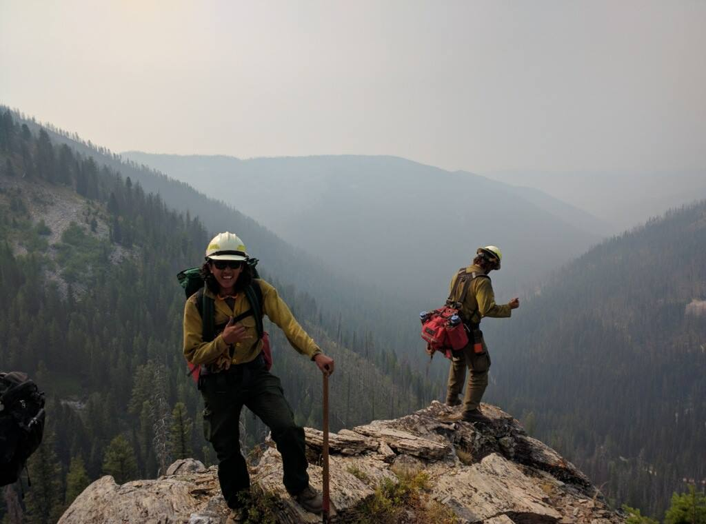

My Geography 485L/585L Home Page
Maurice P. Cruz

About me:
I am a senior graduating in May with a BA in Psychology and minor in GIS. I have worked for the Twin Falls District BLM for the last two years as a Range Technician/Wildland Firefighter and Fireline EMT with engine programs as well as handcrews. I plan on going back to the BLM after graduation to continue working with the TFD Fire and Fuels Management programs as well as with the GIS specialist on district.
Why I'm taking the course:
To better prepare myself for a possible career in GIS and gain valuable skills while pursuing a subject that I enjoy.
Topics I'm interested in
- Remote Sensing
- Fire and Incident Management
- Land and Resource Management
- Conservation
- Wilderness Medicine and EMS
Types of software and data I have worked with:
- ArcMaps and QGIS
- Geocoding
- Vector and Raster Analysis
- Spatial analytics and statistics
- Network Analysis
- Creation of basic maps
- Remote Sensing
- Geometric and Atmospheric Correction
- Image correction and Restoration
- Familiarity with Terrset and ERDAS
- .kml
- .csv
Milestones
Hello World
Milestone 2
Milestone 3
Milestone 4
Deep Dives
Deep Dive 1